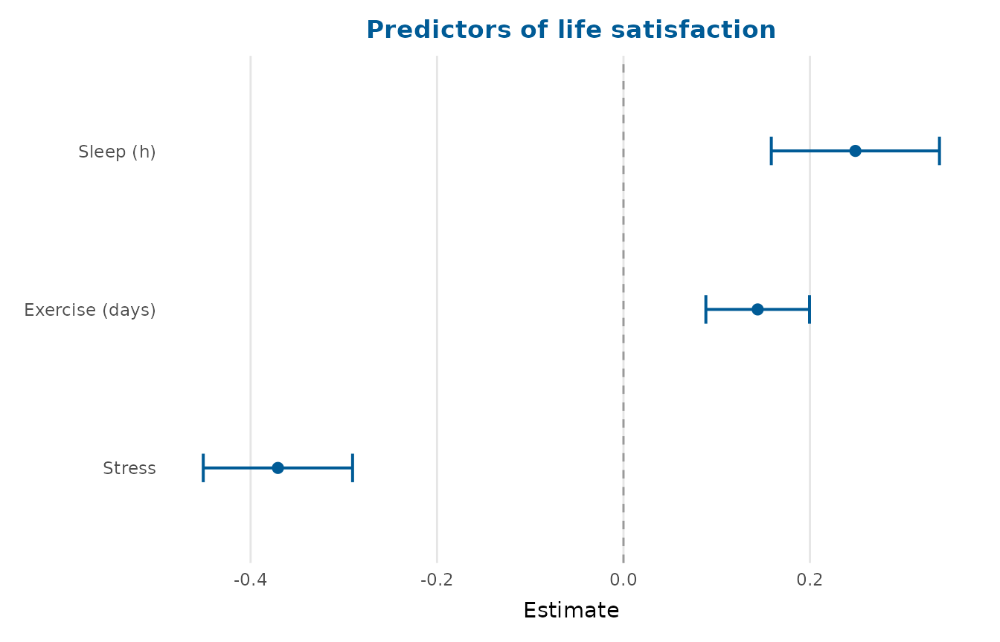
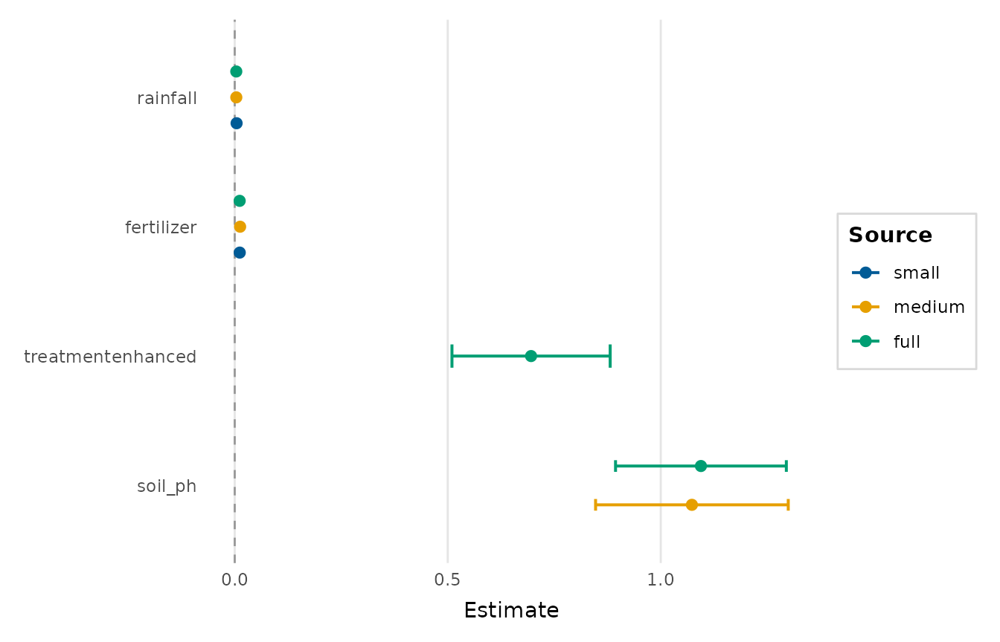
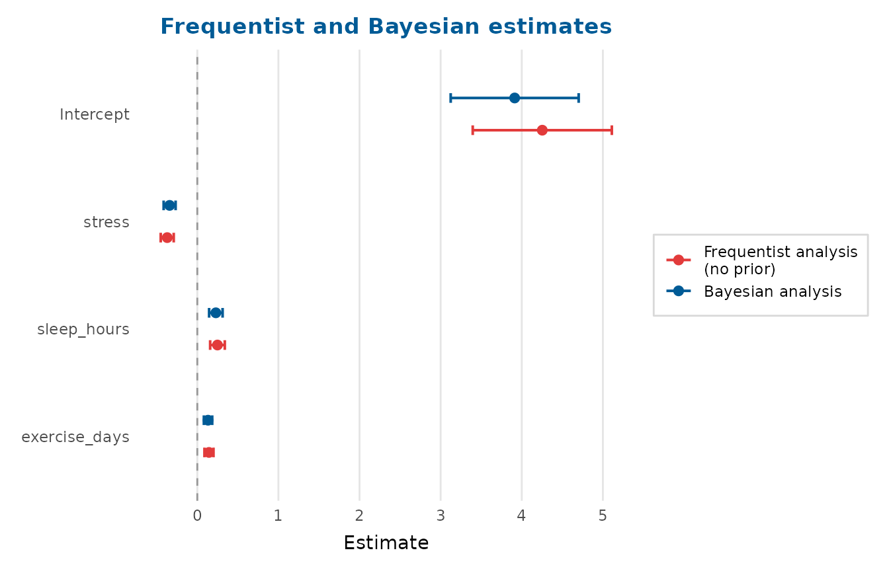
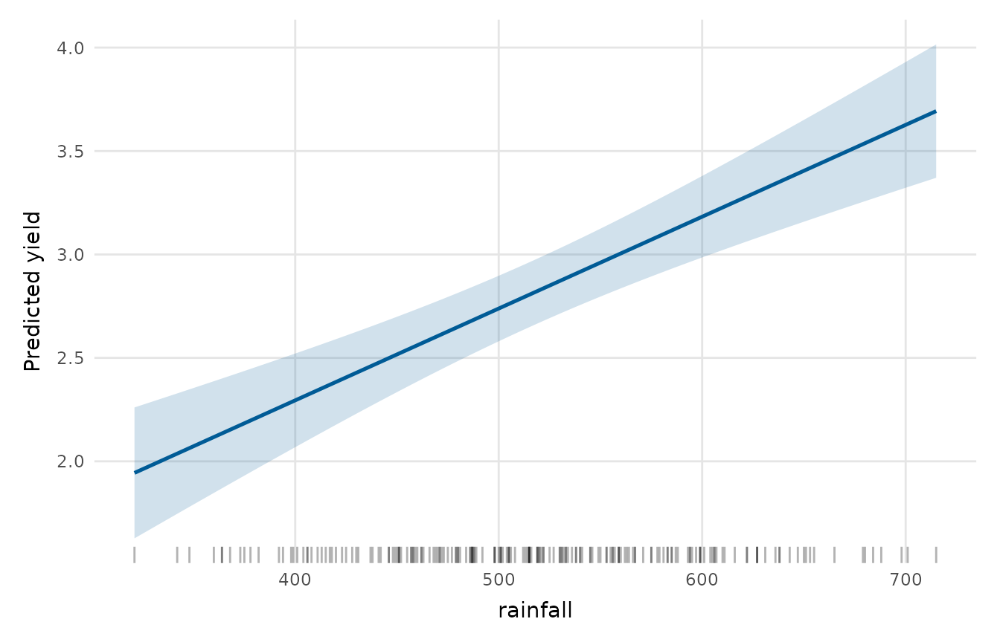
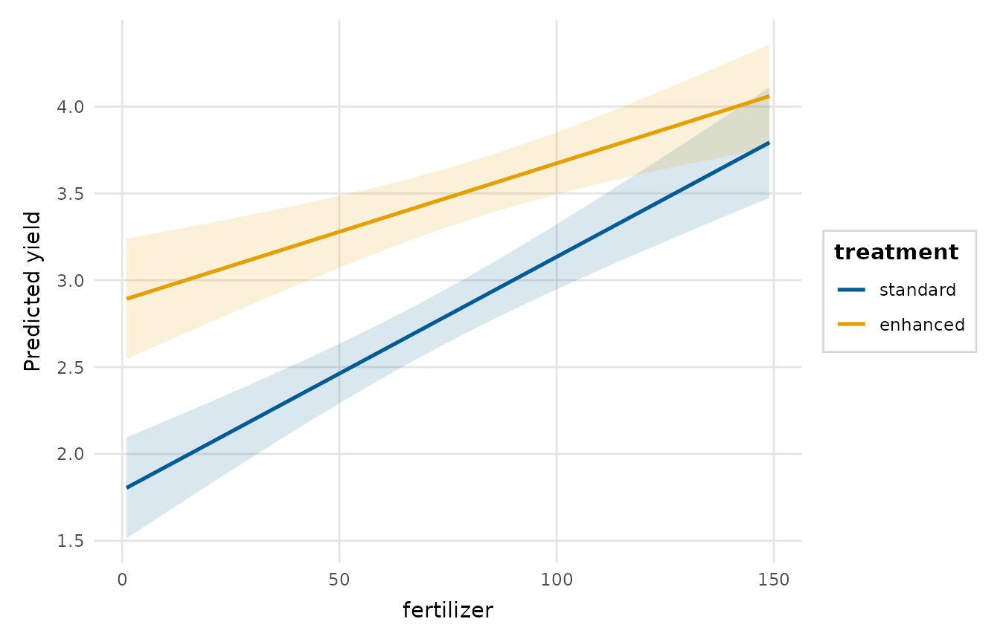
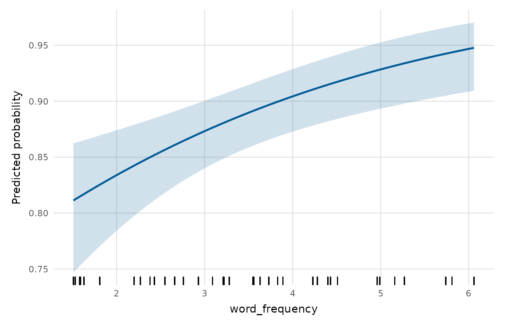
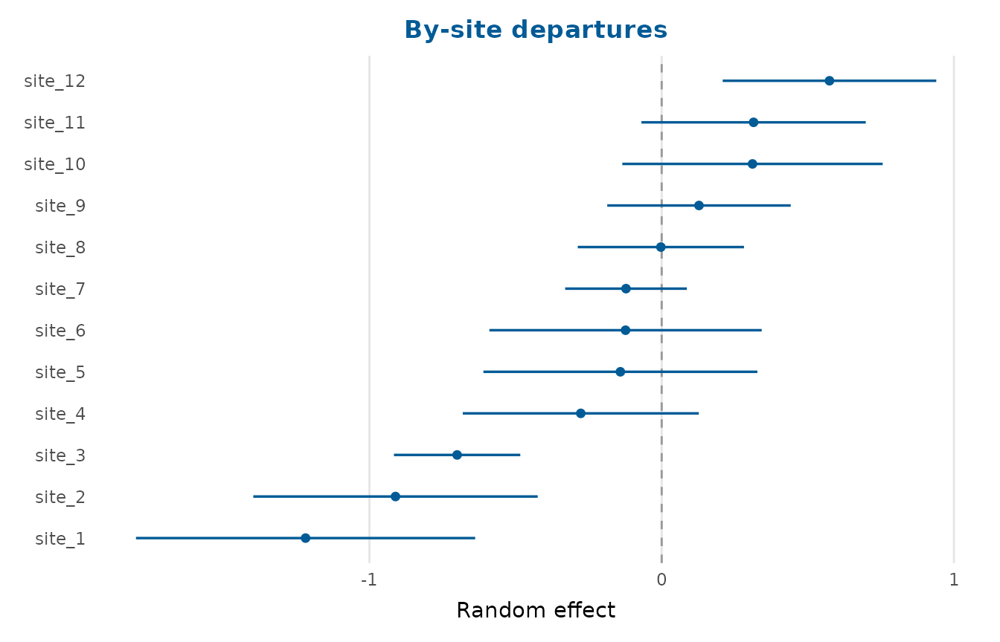
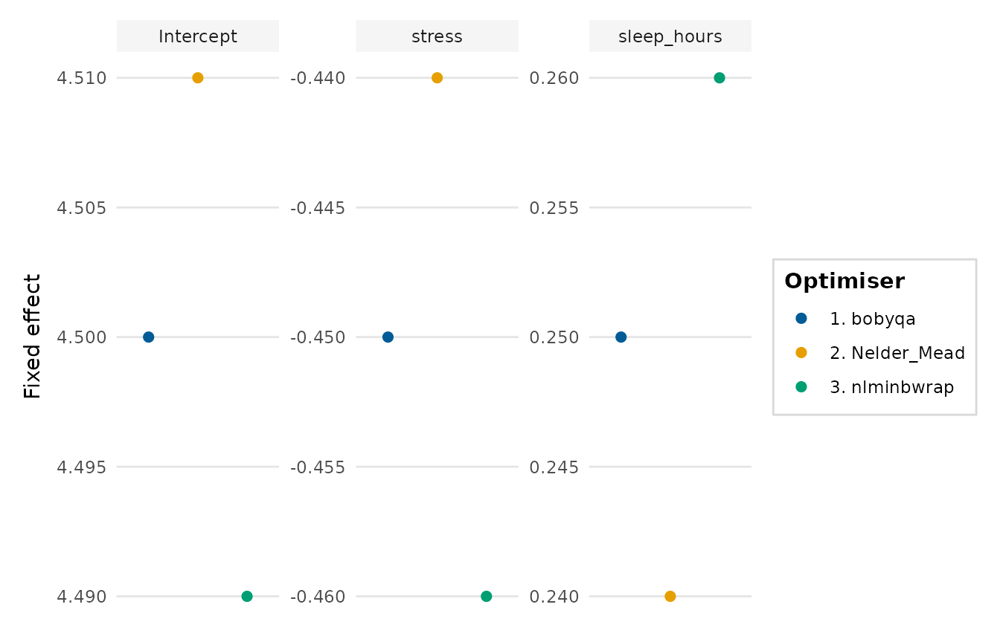
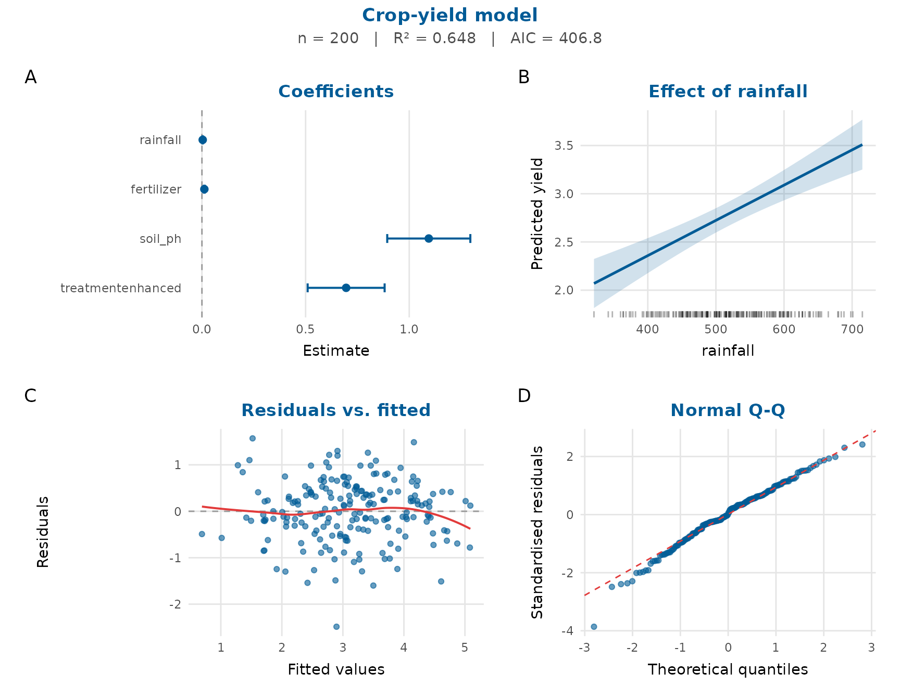

This vignette covers the model-result plots: coefficients, model comparison, predicted values, interactions, random effects and goodness-of-fit.
Coefficient (forest) plots
coefficient_plot() accepts any model
tidy_estimates() understands, or a tidy data frame.
fit <- lm(life_satisfaction ~ stress + sleep_hours + exercise_days,
data = wellbeing_survey)
coefficient_plot(fit, order = "ascending",
labels = c(stress = "Stress", sleep_hours = "Sleep (h)",
exercise_days = "Exercise (days)"),
title = "Predictors of life satisfaction")
#> `height` was translated to `width`.
Comparing models
compare_models() overlays the estimates from several
models, and model_fit_table() summarises their fit.
m1 <- lm(yield ~ rainfall + fertilizer, data = crop_yield)
m2 <- lm(yield ~ rainfall + fertilizer + soil_ph, data = crop_yield)
m3 <- lm(yield ~ rainfall + fertilizer + soil_ph + treatment, data = crop_yield)
compare_models(small = m1, medium = m2, full = m3, order = "descending")
#> `height` was translated to `width`.
knitr::kable(model_fit_table(small = m1, medium = m2, full = m3))| model | n | df | AIC | BIC | logLik | R2 | RMSE |
|---|---|---|---|---|---|---|---|
| small | 200 | 4 | 526.072 | 539.266 | -259.036 | 0.348 | 0.884 |
| medium | 200 | 5 | 454.182 | 470.674 | -222.091 | 0.549 | 0.735 |
| full | 200 | 6 | 406.816 | 426.606 | -197.408 | 0.648 | 0.649 |
Frequentist and Bayesian estimates together
freq <- lm(life_satisfaction ~ stress + sleep_hours + exercise_days,
data = wellbeing_survey)
bayes <- tidy_estimates(freq)
bayes$estimate <- bayes$estimate * 0.92 # stand-in posterior means
bayes$conf.low <- bayes$conf.low * 0.92
bayes$conf.high <- bayes$conf.high * 0.92
frequentist_bayesian_plot(freq, bayes, note_frequentist_no_prior = TRUE,
title = "Frequentist and Bayesian estimates")
#> `height` was translated to `width`.
Predicted values and interactions
effects_plot() shows what the model predicts as one
predictor varies; interaction_plot() shows how that
relationship changes across a second predictor.
fit2 <- lm(yield ~ fertilizer * treatment + rainfall, data = crop_yield)
effects_plot(fit2, "rainfall")
interaction_plot(fit2, "fertilizer", "treatment")
For a binomial glm, predictions are shown on the
probability scale:
gfit <- glm(accuracy ~ word_frequency + condition, data = lexical_decision,
family = binomial)
effects_plot(gfit, "word_frequency")
Random effects
random_effects_plot() draws a caterpillar plot. It reads
an ‘lme4’ model directly, or a data frame of by-group estimates:
re <- data.frame(level = paste0("site_", 1:12),
estimate = sort(rnorm(12, 0, 0.5)),
std.error = runif(12, 0.1, 0.3))
random_effects_plot(re, title = "By-site departures")
#> `height` was translated to `width`.
Optimiser checks
When a mixed model is fitted by several optimisers (via
lme4::allFit()), optimizer_fixef_plot() shows
whether they agree. Without ‘lme4’ you can build the input directly:
opt <- expand.grid(optimizer = c("bobyqa", "Nelder_Mead", "nlminbwrap"),
term = c("(Intercept)", "stress", "sleep_hours"))
opt$value <- c(4.5, 4.51, 4.49, -0.45, -0.44, -0.46, 0.25, 0.24, 0.26)
optimizer_fixef_plot(opt)
A one-figure model report
model_report() composes several of these views –
coefficients, the effect of a focal predictor, residuals-vs-fitted and a
Q-Q plot, with a fit-statistics subtitle – into a single figure for a
quick review or a report appendix.
full <- lm(yield ~ rainfall + fertilizer + soil_ph + treatment,
data = crop_yield)
model_report(full, title = "Crop-yield model")
#> `height` was translated to `width`.